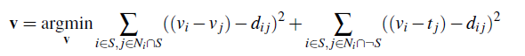

Intro to Computer Vision & Computational Photography: Anderson Lam, Amy Huang
Overview: This project looks into gradient-domain processing with Poisson blending, in order to seamlessly integrate one object into another image. Below we demonstrate this process on a penguin image integrated into a snowy background.
The toy problem consists of computing the x and y gradients of an image and reconstructing that image. We have 2 objectives:
minimize ( v(x+1,y)-v(x,y) - (s(x+1,y)-s(x,y)) )^2 the x-gradients of v should closely match the x-gradients of sminimize ( v(x,y+1)-v(x,y) - (s(x,y+1)-s(x,y)) )^2 the y-gradients of v should closely match the y-gradients of sOur poisson blending procedure is as follows:
Failed Case:
The photos above were able to work well because the original background of the source objects were considerably
similar to the background of the target image. Here we have a failed case with part of the source object not matching the background
of the target image background.
We implemented mixed gradient to improve blending by doing a similar procedure as Poisson blending using the following formula
Overall, this helped make the results look more realistic.
Failed Case: Same problem as before, the blending is not believable with the different backgrounds.
The concept of Color2Gray was to improve grayscale contrast since converting an image to gray can lose
a lot of object distinguishing properties. At the moment, this is what a color blind test looks like when
converted the grayscale (we lose all the information of the number). We want to implement something so that
the contrast is kept similarly.
We accomplished this by converting the image to HSV and looking at the saturation and value. We do a similar process
as Poisson blending but taking into account these parameters. Because it took a long time to process, we rescaled the images down.